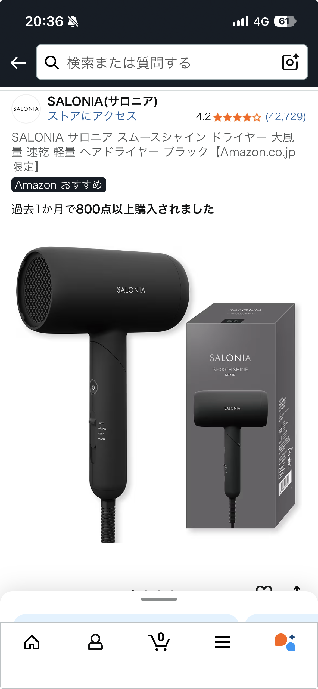

SALONIA上位モデル ヘアアイロン（ブラック）を口コミからレビュー｜デザイン重視でも妥協しない人向け
最終更新日：2025-10-05｜カテゴリ：日用品

Amazon星4評価のリアルな口コミ概要
今回レビューするのは、Amazonで星5つ中4つ評価を獲得している SALONIA（サロニア）上位モデル ヘアアイロン ブラックです。 実際の口コミでは「最初は独特な取り回し（首の曲げ方に苦戦）」という声がありつつも、 慣れてしまえば問題なく使えていて、見た目の良さ・デザイン性が高く評価されています。
特にブラックカラーの上位モデルは、洗面台やドレッサーに置いたときの存在感が程よく、 「いかにも家電」という雰囲気が薄いのがポイント。生活感を出したくない人にとって、 デザイン性は購入の決め手になりやすい要素です。
SALONIA上位モデルのデザインと質感
口コミでも「見た目はサロニアなので良い」と書かれている通り、 マット寄りのブラックカラーとシンプルなロゴ配置で、価格以上の高級感があります。 洗面台に出しっぱなしにしていても悪目立ちせず、インテリアを邪魔しません。
また、上位モデルらしくボディのラインがスッキリしており、 手に持ったときのフィット感も良好。ケーブルの付け根部分（口コミで言う「首」）も 可動域が広く、慣れてしまえば左右どちらの手でも扱いやすい設計になっています。
「首の曲げ方」に最初は戸惑うが、慣れれば快適
レビューで触れられている「独特な取り回し（首の曲げ方に苦戦）」というポイントは、 ケーブルの付け根が自由に動く構造ゆえの違和感だと考えられます。 最初はコードの向きが定まらず、手首の角度やアイロンの向きを調整しながら使う必要があります。
ただし、数回使ううちに「自分の持ち方のクセ」が分かってくるので、 口コミにもある通り慣れてしまえば問題なく使えるレベルです。 むしろ、コードが固定されすぎているアイロンよりも、可動域が広い分だけ 巻き髪や外ハネなど、さまざまなスタイリングに対応しやすくなります。
仕上がり・使い勝手｜毎日のスタイリングを時短したい人向け
SALONIAのヘアアイロンは、立ち上がりの速さと温度ムラの少なさで定評があります。 上位モデルでもその特徴は健在で、朝の忙しい時間帯でも短時間でスタイリングに入れるのが魅力です。
プレートの滑りも良く、髪を挟んだときにガタつきにくいので、 ミディアム〜ロングヘアでもスムーズにスルーできます。 しっかりクセを伸ばしつつ、毛先だけ軽く内巻きにするなど、 「きちんと感のあるナチュラルヘア」を作りやすい印象です。
また、ブラックの上位モデルは見た目が落ち着いているため、 男女問わず使いやすいデザインなのもポイント。パートナーと共用したい人にも向いています。
購入前に知っておきたい注意点
一方で、購入前に知っておきたいのは、最初の数回は取り回しに違和感が出やすいという点です。 ケーブルの向きやアイロン本体の角度を試しながら、自分なりの持ち方を見つける期間が必要になります。
また、上位モデルとはいえプロ用サロン機器ほどのパワーではないため、 非常に強いくせ毛を一度で完全に伸ばしたい人よりも、 「普段使いで髪を整えたい人・身だしなみを整える時間を短縮したい人」に向いた製品です。
こんな人にSALONIA上位モデル（ブラック）はおすすめ
- 洗面台や部屋の雰囲気に合う、おしゃれなヘアアイロンが欲しい人
- 毎朝のスタイリング時間を短縮したい社会人・学生
- 男女兼用で使えるシンプルなデザインを探している人
- 価格とデザイン、機能のバランスが取れたモデルを選びたい人
デザイン性と実用性のバランスが良く、「見た目も機能も妥協したくない」という人には かなり刺さるモデルだと感じます。星4という評価も、「最初の取り回しに慣れが必要」 という点を踏まえれば、総合的には満足度の高い一台と言えるでしょう。
まとめ｜デザイン重視派の“日用品ガジェット”として有力候補
SALONIA上位モデル ヘアアイロン（ブラック）は、日用品でありながら所有欲も満たしてくれるアイテムです。 口コミの通り、最初は首の曲げ方や取り回しに少し戸惑うものの、 慣れてしまえば毎日のスタイリングをしっかり支えてくれる相棒になります。
「洗面台に置いていてもテンションが下がらないヘアアイロンが欲しい」 「価格とデザイン、使い勝手のバランスが良いモデルを選びたい」 という方は、一度チェックしてみる価値があります。
実際の価格や在庫状況、最新の口コミはAmazonの商品ページが一番分かりやすいので、 気になる方はこちらのリンクから詳細を確認してみてください。